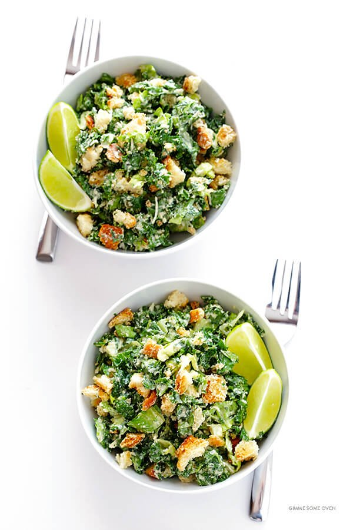

Sweet potatoes are roasted to perfection with chunky onion wedges and garlic, then finished with a drizzle of balsamic vinegar for a naturally sweet holiday side dish. My Granny made this for Easter dinner. We were all sitting at the table commenting on how delicious it was and asked for the recipe.
- 4 cups chopped fresh kale
- 4 cups chopped Romaine lettuce
- 2 cups croutons
- 3/4 cup grated Parmesan cheese
- 1 batch Lime Caesar Dressing, below
- optional: 1 cup halved cherry or grape tomatoes
Steps
- Add the kale, Romaine, croutons, Parmesan, dressing, and tomatoes (if using) to a large bowl. Toss until combined.
- Serve immediately.
Return to top